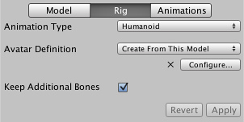
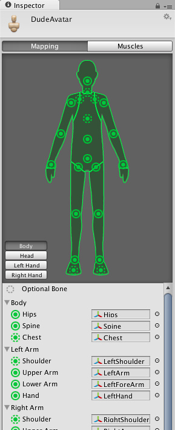
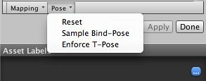
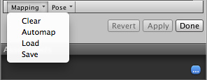

Unity Manual>User Guide>Creating Gameplay>Mecanim Animation System>Working with humanoid animations>Configuring the Avatar
Configuring the Avatar
Since the Avatar is such an important aspect of the Mecanim system, it is important that it is configured properly for your model. So, whether the automatic Avatar creation fails or succeeds, you need to go into the mode to ensure your Avatar is valid and properly set up. It is important that your character's bone structure matches Mecanim's predefined bone structure and that the model is in T-pose.
If the automatic Avatar creation fails, you will see a cross next to the Configure button.

If it succeeds, you will see a check/tick mark:
Here, success simply means all of the required bones have been matched but for better results, you might want to match the optional bones as well and get the model into a proper T-pose.
When you go to the menu, the editor will ask you to save your scene. The reason for this is that in mode, the Scene View is used to display bone, muscle and animation information for the selected model alone, without displaying the rest of the scene.
Once you have saved the scene, you will see a new Avatar Configuration inspector, with a bone mapping.

The inspector shows which of the bones are required and which are optional - the optional ones can have their movements interpolated automatically. For Mecanim to produce a valid match, your skeleton needs to have at least the required bones in place. In order to improve your chances for finding a match to the Avatar, name your bones in a way that reflects the body parts they represent (names like "LeftArm", "RightForearm" are suitable here).
If the model does NOT yield a valid match, you can manually follow a similar process to the one used internally by Mecanim:-
- (try to get the model closer to the pose with which it was modelled, a sensible initial pose)
- (create a bone-mapping from an initial pose)
- (force the model closer to T-pose, which is the default pose used by Mecanim animations)

If the auto-mapping () fails completely or partially, you can assign bones by either draging them from the Scene or from the Hierarchy. If Mecanim thinks a bone fits, it will show up as green in the Avatar Inspector, otherwise it shows up in red.
Finally, if the bone assignment is correct, but the character is not in the correct pose, you will see the message "Character not in T-Pose". You can try to fix that with or rotate the remaining bones into T-pose.

Human Template files
You can save the mapping of bones in your skeleton to the Avatar on disk as a "human template file" (extention *.ht), which can be reused by any characters that use this mapping. This is useful, for example, if your animators use a consistent layout and naming convention for all skeleton but Mecanim doesn't know how to interpret it. You can then the .ht file for each model, so that manual remapping only needs to be done once.
(back to Avatar Creation and Setup)
(back to Mecanim introduction)
Page last updated: 2012-11-05